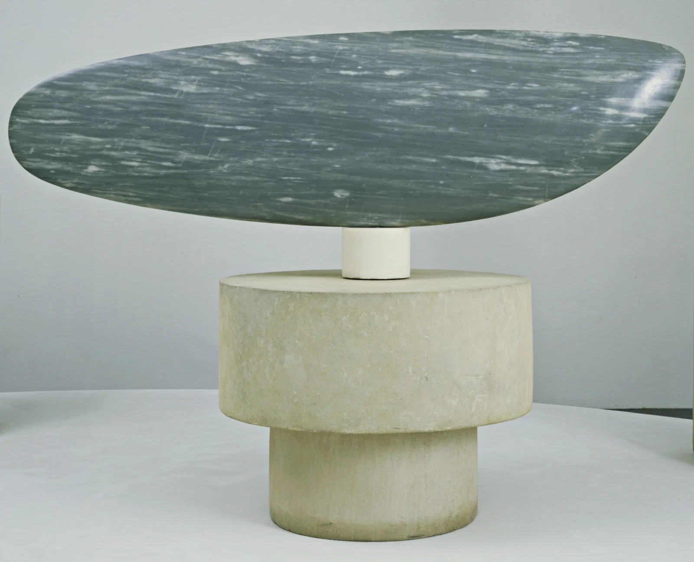

A fish without scales: weight settles into the base; movement remains with the eye.
A wide body, a narrow support. Cylinders anchor the image.
Cool gray against stone white. Low saturation; clear value contrast.
Soft light describes the curve. Pale veins are not all reflections.
Suggested editorial palette, not measured artwork colors.
A smooth, continuous surface leaves room for natural veining.
Constantin Brancusi, 1876–1957. French sculptor, born Romania.
The eye glides along the arc, sensing motion inside heavy stone.
Horizontal form + narrow support + space.
Stone white 70% + gray 25% + charcoal 5%.
Test the silhouette at thumbnail size.
Suggested editorial palette, not measured artwork colors.
Fish · Constantin Brancusi · 1930
Source: The Museum of Modern Art · 695.1949.a-d
Rights remain with the artist and rights holders. © Succession Brancusi / ARS 2018. All rights reserved; no open license. Verify reproduction permission before posting. Independent visual analysis.